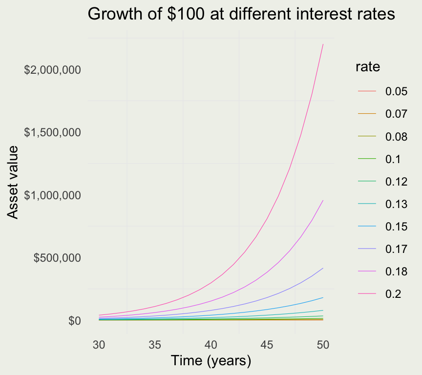
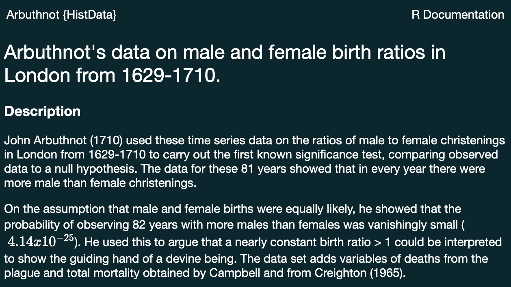
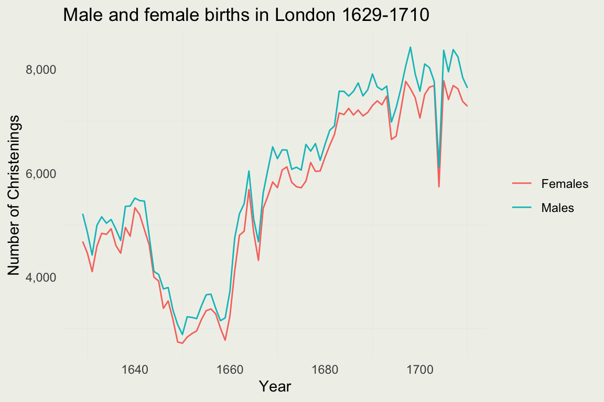
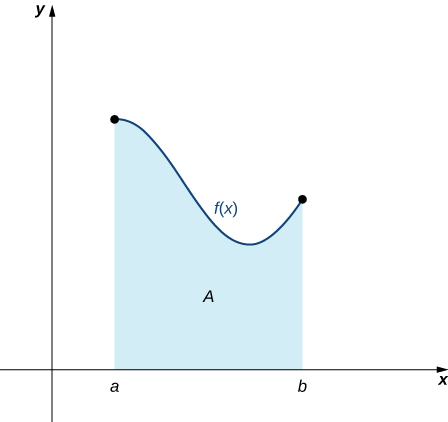
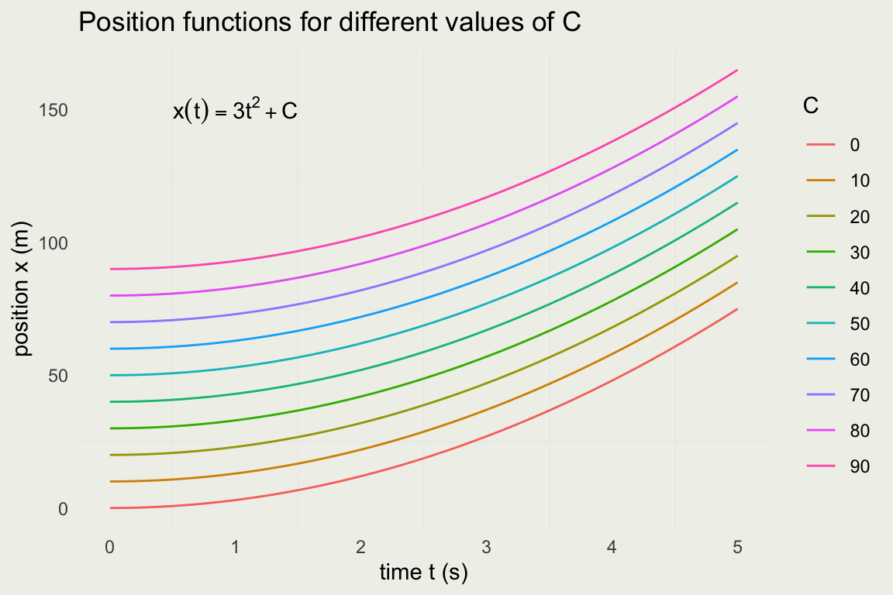
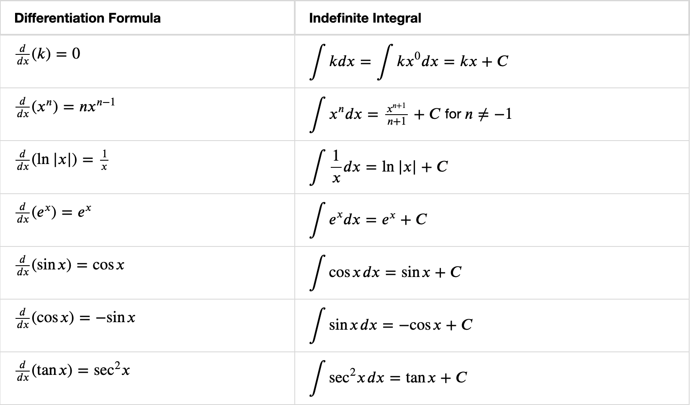
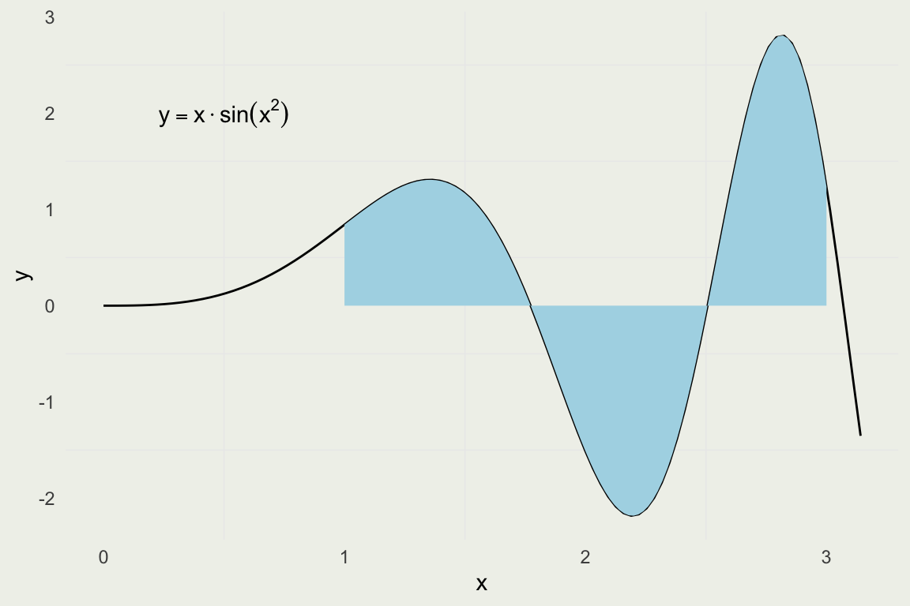
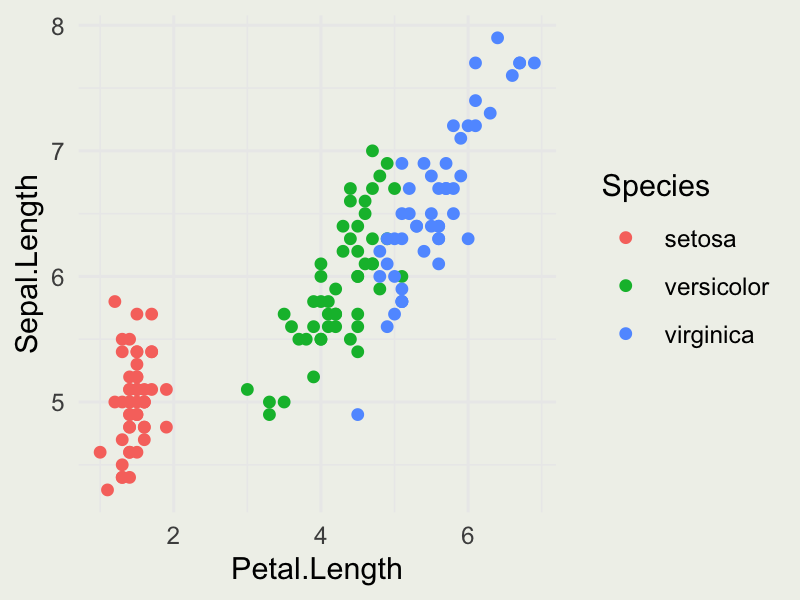
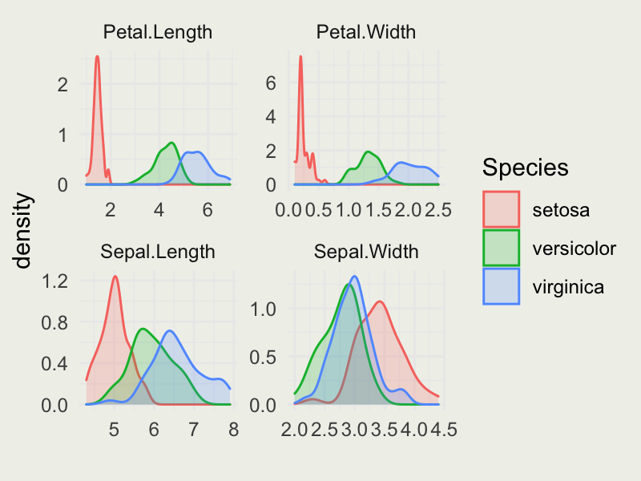

SMaC: Statistics, Math, and Computing
APSTA-GE 2006: Applied Statistics for Social Science Research
Session 3 Outline
- Transforming data for plotting
- Antiderivative
- Some rules of integration
- Evaluating integrals numerically
- The waiting time distribution
\[ \DeclareMathOperator{\E}{\mathbb{E}} \DeclareMathOperator{\P}{\mathbb{P}} \DeclareMathOperator{\V}{\mathbb{V}} \DeclareMathOperator{\L}{\mathscr{L}} \DeclareMathOperator{\I}{\text{I}} \]
Data transformations
- We saw that continuous compounding does not make such a big difference over time
- How would the value vary by rate?
- We investigate with a common simulate-pivot-plot pattern
Map Function
“The purrr::map* functions transform their input by applying a function to each element of a list or atomic vector and returning an object of the same length as the input.”
- Generate 10 vectors of 100 uniform random realizations, where the first vector has
min = 1, secondmin = 2… last vector hasmin = 10, andmax = 15for all - Now compute the average value of each of the 10 vectors
- Run the code and look inside y after then first function call and after the second. What do you expect to see?
Pivot Functions
“pivot_longer()”lengthens” data, increasing the number of rows and decreasing the number of columns. The inverse transformation is pivot_wider()”
Sepal.Length Sepal.Width Petal.Length Petal.Width Species
1 5.1 3.5 1.4 0.2 setosa
2 4.9 3.0 1.4 0.2 setosa
3 4.7 3.2 1.3 0.2 setosa
4 4.6 3.1 1.5 0.2 setosa
5 5.0 3.6 1.4 0.2 setosa
6 5.4 3.9 1.7 0.4 setosairis_long <- iris |> pivot_longer(!Species, names_to = "length_width", values_to = "measure")
head(iris_long)# A tibble: 6 × 3
Species length_width measure
<fct> <chr> <dbl>
1 setosa Sepal.Length 5.1
2 setosa Sepal.Width 3.5
3 setosa Petal.Length 1.4
4 setosa Petal.Width 0.2
5 setosa Sepal.Length 4.9
6 setosa Sepal.Width 3 Data Transformations
| 1 | 2 | 3 |
|---|---|---|
| 105.1271 | 110.5171 | 116.1834 |
| 106.8939 | 114.2631 | 122.1403 |
| 108.6904 | 118.1360 | 128.4025 |
| 110.5171 | 122.1403 | 134.9859 |
| 112.3745 | 126.2802 | 141.9068 |
| 114.2631 | 130.5605 | 149.1825 |
| 116.1834 | 134.9859 | 156.8312 |
| 118.1360 | 139.5612 | 164.8721 |
| 120.1215 | 144.2917 | 173.3253 |
| 122.1403 | 149.1825 | 182.2119 |
- Modern R usage offers a lot of shortcuts but those may be confusing to beginners.
- In particular, R loops have mostly been replaced with
map()functions. - We recommend
purrr::map()functions instead of R’s*apply().
rates <- seq(0.05, 0.20, length = 10)
P <- 100
time <- seq(1, 5, length = 50)
Pe <- function(A, r, t) A * exp(r * t)
time |> map(\(x) Pe(A = P, r = rates, t = x))
# above is a shortcut for
map(time, function(x) Pe(A = P, r = rates, t = x))
# and the above is a shortcut for the following loop
l <- list()
for (i in seq_along(time)) {
l[[i]] <- Pe(A = P, r = rates, t = time[i])
}| rate | year | value |
|---|---|---|
| 0.05 | 1 | 105.1271 |
| 0.05 | 2 | 110.5171 |
| 0.05 | 3 | 116.1834 |
| 0.05 | 4 | 122.1403 |
| 0.05 | 5 | 128.4025 |
| 0.05 | 6 | 134.9859 |
| 0.05 | 7 | 141.9068 |
| 0.05 | 8 | 149.1825 |
| 0.05 | 9 | 156.8312 |
| 0.05 | 10 | 164.8721 |

RStudio cheatsheats
Your Turn

- Run the following command:
install.packages('HistData') - Followed by
library(HistData) - Tale a look at the Arbuthnot dataset:
?Arbuthnot
| Year | Males | Females | Plague | Mortality | Ratio | Total |
|---|---|---|---|---|---|---|
| 1629 | 5218 | 4683 | 0 | 8771 | 1.114243 | 9.901 |
| 1630 | 4858 | 4457 | 1317 | 10554 | 1.089971 | 9.315 |
| 1631 | 4422 | 4102 | 274 | 8562 | 1.078011 | 8.524 |
| 1632 | 4994 | 4590 | 8 | 9535 | 1.088017 | 9.584 |
| 1633 | 5158 | 4839 | 0 | 8393 | 1.065923 | 9.997 |
| 1634 | 5035 | 4820 | 1 | 10400 | 1.044606 | 9.855 |
- Use the tools to produce the plot the looks something like this.
- Bonus: compute the ratio of female births and plot it.

Integral Calculus
- Integration plays a central role in Statistics
- It is a way to compute Expectations and Event Probabilities
- In Bayesian Statistics, we use integration to compute posterior distributions of the unknowns
- In Frequentist Statistics, we use derivatives to find the most likely values of the unknowns

- Unknowns are sometimes called parameters, like our \(a\) and \(b\), in the \(x(t) = a + bt^2\) model
Intuition Behind Integration
- Integration is a continous analog of summation
- You can also think of an integral as undoing a derivative
- You can also think of it as a signed area under a (one-dimensional) function \(f\)
- In modern applications, integration is almost always done numerically on the computer
- But it helps to understand what what the computer is doing

Image Source: Calculus Volume 1
From Velocity to Postion Functions
- Recal our position function \(x(t) = 2 + 3t^2\)
- We found the velocity function by differentiating and we can almost get back the position function by integrating.
\[ \begin{eqnarray} v(t) & = & \frac{d}{dt} \left( 2 + 3t^2 \right) = 6t \\ x(t) & = & \int{6t\, dt} = 3t^2 + C \end{eqnarray} \]
Why almost? Look at the constant \(2\) in \(\frac{d}{dt}(2 + 3t^2)\). You can replace it with any other constant and the result will still be \(6t\).
To put it another way, to characterize the position fucntion you need to know the intial position and you can’t get that from the velocity function alone.
The position function for different values of initial position \(C\). Notice that the only thing that changes is the intercept.

Some Common Integrals
OpenStax: Here is a more complete list
Techniques of Intergration
- Integral, like a derivative, is a linear operator:
\[ \begin{eqnarray} \int [f(x) + g(x)] \, dx &=& \int f(x) \, dx + \int g(x) \, dx \\ \int [c \cdot f(x)] \, dx &=& c \int f(x) \, dx \end{eqnarray} \]
Unlike derivatives, there are generablly no rules for finding integrals
Most integrals do not have a closed-form, analytical solutions. This is true for almost all integrals in statistics.
In one or two dimentions, it is easy to evaluate most integrals numerically.
In higher dimentions, you need very sophisticated methods that rely on Markov Chain Monte Carlo (MCMC). We will not cover MCMC in this course.
For simple integrals we can somtimes find a closed-form solution by relying on u-substitution and integration by parts.
Playing with Integrals
- Given our intuition for integrals being singed areas, let’s see how to compute them analytically and numerically.
- Warning: these techniques only work in low dimentions. For high dimentional integrals you need to use MCMC.
- Suppose we want evaluate the integral \(\int_{1}^{3} x \sin(x^2)\, dx\)

Constructing a Riemann Sum

Notice that the function takes a function as an argument. These are called higher order functions.
Source: OpenStax Calculus Volume 1
Evaluating the Integral
Integrating Analytically
- Most integrals can’t be evaluated analytically but we can do \(\int x \sin(x^2)\, dx\).
- We make a substitution. Let \(u = x^2\), then \(du/dx = 2x\) and \(dx = \frac{1}{2 \sqrt{u}}du\)
\[ \begin{eqnarray} \int \sqrt{u} \cdot \sin(u) \frac{1}{2\sqrt{u}}du & = & \\ \frac{1}{2}\int \sin(u)\, du & = & \\ -\frac{1}{2} \cos(u) & = & -\frac{1}{2} \cos(x^2) \end{eqnarray} \]
Comparing the Results
- The universe is in balance!
Analytical Integration on the Computer
When in doubt, you can always try WolframAlpha
Python library SymPy through R pacakge
caracas
library(caracas); library(stringr)
add_align <- function(latex) {
str_c("\\begin{align} ", latex, " \\end{align}")
}
add_int <- function(latex) {
str_c("\\int ", latex, "\\, dx")
}
x <- symbol('x'); f <- x^2 / sqrt(x^2 + 4)
tex(f) %>% add_int() %>% str_c(" =") %>% add_align() %>% cat()\[\begin{align} \int \frac{x^{2}}{\sqrt{x^{2} + 4}}\, dx = \end{align}\]
\[\begin{align} \frac{x \sqrt{x^{2} + 4}}{2} - 2 \operatorname{asinh}{\left(\frac{x}{2} \right)} \end{align}\]
Your Turn: Waiting Time
- There is s famous distribution in statistics called Exponential distribution
- Its probability density function (PDF) is given by:
\[ f(x) = \lambda e^{-\lambda x}, \, x > 0, \text{and } \lambda > 0 \]
This distribution is sometimes called the waiting time (to some event) distribution, where \(\lambda\) is the rate of events we expect
One property of this distribution is that no matter how long you wait, the probability of seeing an event remains the same.
One of the properties of the PDF is that it must integrate to 1
Let’s check that it’s true
\[ \int_{0}^{\infty} \lambda e^{-\lambda x} dx = \]
Ingegration by Parts
\[ \begin{eqnarray} (f g)' & = & f'g + g'f \\ \int (f g)' \, dx & = & \int f'g dx + \int g'f \, dx \\ fg & = & \int f'g \, dx + \int g'f \, dx \\ \int f g' \, dx & = & fg - \int f' g \, dx \\ u & = & f(x) \\ v & = & g(x) \\ du & = & f'(x) \, dx \\ dv & = & g'(x) \, dx \\ \int u \, dv & = & uv - \int v \, du \end{eqnarray} \]
Exponential Growth (again)
Recall, at the beginning we defined an exponential growth with the following differential equation:
\[ \frac{\text{d}[y(t)]}{\text{d}t} = k \cdot y(t) \]
We can now solve it:
\[ \begin{align*} \frac{1}{y} \, \text{d}y &= k \, \text{d}t \\ \int \frac{1}{y} \, \text{d}y &= \int k \, \text{d}t \\ \log(y) &= k \cdot t + C \\ y(t) &= y_0 \cdot e^{kt}, \, y_0 = e^C \end{align*} \]
Homework
- Take a look at dataset
iris(?iris) - Compute the overall average Sepal.Length, Sepal.Width, Petal.Length, Petal.Width
- Compute the average by each Species of flower (hint: use
group_byandsummarisefunctions fromdplyr) - Produce the plot that looks like this:

- Produce the plot that looks like this: (check out
geom_densityandfacet_wrapfunctions)

- Compute the following integral and show the steps:
\[ \int 2x \cos(x^2)\, dx \]
- Evaluate this integral (on paper) from \(0\) to \(2\pi\) and use R’s
integratefunction to validate your answer.